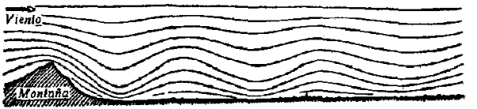
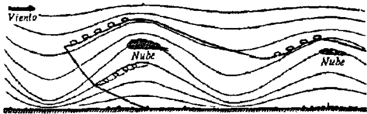
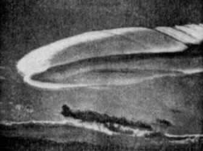

Manual del Vuelo a Vela
Wolf Hirth
1942
La ascendencia de ondulación
por
PAUL STEINIG
Además de
las ascendencias orográfica, térmica, de nubes y de frente tormentoso, que el piloto de
velero tiene como medios de volar a vela bien probados y garantizados, va tomando cada vez
más importancia otro manantial de energía utilizable para el vuelo: la ascendencia de
ondulación del aire, que en la escuela imperial de vuelo a vela de Grunau, en los Montes
Gigantes, está siendo utilizada desde hace dos años de un modo sistemático,
especialmente para vuelos de altura. También ha dado sus frutos en el vuelo de distancia
por medio del razonamiento sencillo de que si detrás de los Montes Gigantes se podía
conseguir una altura de 2 a 3000 m., un buen velero de concurso podría transformar esa
altura en distancia por simple planeo, y así en 1936 se consiguió un vuelo de 81 km.
empezando por alcanzar unos 1400 m. de altura sobre el punto de salida.
Las
observaciones hechas en Grunau sobre el movimiento ondulatorio del aire han hecho ver que
éste depende: de la forma del obstáculo por encima del cual pasa el aire,
especialmente de su forma en sotavento (lado opuesto a donde viene el viento) ; de la
velocidad y del terreno que sigue al obstáculo. Una ladera empinada y una corriente
fuerte aumentan la magnitud de la desviación y determinan así el valor de los primeros
ángulos de proyección y de caída (Se refieren
estas designaciones a los ángulos que las trayectorias de las partículas de aire forman
con la horizontal; la rama ascendente de la onda forma con la horizontal el ángulo de
proyección, análogo al de proyección al disparar una pieza de artillería. La rama
descendente de la onda forma un ángulo con la citada horizontal, que es el de caída.
Este ángulo caracteriza la forma de la primera onda recorrida por los filetes de aire al
salir del obstáculo. - N. del T.)
(fig.
115), mientras que el terreno que sigue influye sobre la formación del oleaje. Cuando la
fuerza del viento tiene oscilaciones, se producen también pequeñas traslaciones de las
zonas de ascendencia y precisamente en el sentido de acercarse la ondulación al
obstáculo cuando la velocidad del viento aumenta, acortándose entonces la longitud de
onda, mientras que al disminuir el viento la ondulación avanza y la longitud de la onda
es mayor. El terreno inmediato influye, contribuyendo a la formación de las ondulaciones
cuando es lo más llano posible y sin grandes obstáculos que podrían perjudicar esa
formación.
Según
esto, lo importante para el piloto es llegar a conocer dónde « está » la ascendencia
detrás de la montaña y si será suficiente para volar a vela.

Fig. 115. Formación de oleaje aéreo detrás de las montañas elevadas
Para
esto hay una indicación que da idea de las proporciones del movimiento ondulatorio,
como sucede, por ejemplo, en los Montes Gigantes; una señal excelente y nunca falsa: la
formación de nubes a sotavento del obstáculo. Si la ondulación es tan pronunciada que
las cúspides de las ondas entran en el nivel de condensación, se produce la nubosidad
típica de la ondulación del aire; nubes paralelas al obstáculo en forma de banco
estacionario con borde anterior recortado y deshilachado el posterior. Muchas veces son
varios los bancos paralelos que se producen, a distancias iguales, poco más o menos, unos
de otros, y con ello están indicando al piloto que allí están los vértices de la
ondulación. A continuación del obstáculo y delante de la nube está siempre la
región ascendente de la onda; detrás de la nube, la descendente. Muchas veces la nube
misma no representa el nivel más alto de la ondulación y volando delante de ella, en
algunas circunstancias favorables, se puede llegar aún a mayor altura.
La
técnica del vuelo con apoyo en una ascendencia ondulatoria es distinta que la empleada
en la ascendencia térmica. Como la ondulación representa una ascendencia inmóvil con
relación al terreno y no se traslada a pesar de que el viento
Para
llegar a un campo de ascendencia ondulatoria hay que empezar por hacerse remolcar por
avión contra el viento para, caso de faltar la ascendencia poder volver al lugar de
partida. Para llegar a la mayor altura que sea posible conseguir, se vuela, después de
desembragar, siempre en línea recta hasta que ya no se suba más. Si el viento es muy
fuerte, con ese vuelo se cortarán las líneas de nivel como si se subiese en un ascensor
hasta llegar a la mayor altura posible en ese lugar. Si el aparato ya no sube más y
todavía se ve la nube detrás del avión, se empezará a virar en círculo, puesto que la
mayor altura posible sólo puede alcanzarse volando hacia atrás hasta poco antes del
vértice. Llegado a éste, habrá que poner proa al viento si se quiere conservar la
altura conseguida. Si el viento es muy fuerte, es casi mejor llegar a la mayor altura con
vuelo lento y paso de cangrejo, dejándose llevar hacia atrás hasta conseguir la cúspide
de la onda.

Fig. 116. Técnica del vuelo en la ascendencia de oleaje aéreo
La táctica
después de haber conseguido la altura máxima depende del objeto del vuelo. Para un vuelo
de duración lo mejor es volar a lo largo de la cresta de la onda paralelamente al
obstáculo, yendo y viniendo en toda su longitud. Por el contrario, si lo que se persigue
es un vuelo de altura, una vez conseguido el fin, se volará en la zona descendente de la
onda, con lo que en el tiempo más corto posible se habrá llegado otra vez a la madre
Tierra, sin necesidad de que el avión sufra el exceso de fatiga que supone descender
picando. Por otra parte, los 4 ó 5 m. de la ascendencia detrás de los Montes Gigantes,
que es su intensidad corrientemente, no se vencen así como así, con sólo picar. Un
vuelo de distancia con el viento de popa, utilizando lo más posible una cresta de ondas,
se hace poco más o menos, como sigue: se empieza por llegar hasta la primera onda, como
se ha dicho para el caso de vuelo de altura, y, una vez conseguida la altura máxima, se
vuela en dirección a la onda inmediata. Si la velocidad de vuelo es la del aire, se
seguirá el filete correspondiente a la cresta alcanzada y así, si la onda siguiente es
suficientemente peraltada, hasta se podrá llegar a la capa de aire que corresponde a la
cresta de esa onda, a la que se llegará virando otra vez en círculo y escalando así
su altura. Pero si las ondas siguientes fuesen más rebajadas, se llegará a la próxima
ascendencia al nivel de una capa más baja que la correspondiente a la cresta y habrá que
ponerse proa al viento antes de iniciar la subida a la cresta con la virada en círculo,
siendo necesario ahora tantear y buscar los sitios convenientes, repitiendo la maniobra,
hasta que finalmente se alcance la nueva onda en la cual el variómetro deberá indicar
cero. Desde aquí se iniciará el planeo con el viento de popa hasta el punto en que se
dé la virada última para el aterrizaje. Se ve, pues, que las circunstancias que
concurren en el aprovechamiento de la ascendencia de ondulación en la atmósfera están
perfectamente conocidas después de los años que se lleva ya explotándola. Estas
ascendencias no se presentan solamente en los Montes Gigantes, pues también existen
detrás de los Montes « Eulen », de las crestas del « Landeshutter » y de las «
montañas Bob-katzbach », que cierran el valle de Hirschberg por el SE, y NE., las
últimas sólo 250 a 300 m. más altas que el valle inmediato, en todas las cuales se ha
volado a vela y a veces en la primera, segunda y tercera onda. Igualmente es posible el
mismo modo de volar en otras
montañas de Alemania (No solamente se
presenta el fenómeno de la nube Moazagotl en Alemania; es un fenómeno general sobre
muchas cordilleras, de formación de nubes lenticulares con arreglo a lo que explica en el
capitulo siguiente el Dr. Höhndorf. Sin ir más lejos, el que esto escribe ha observado
las nubes de ese tipo a lo largo de la cordillera Carpeto-Vetónica y en particular sobre
la sierra de Guadarrama, habiendo visto claramente en algún caso cuatro ondas, de las
cuales la cuarta estaba sobre la vertical de Madrid.

Fig. 117. La nube « Moazagotl » en los Montes GigantesWEGENER
relata
haberlas observado en Groenlandia. En Italia se conoce esta nube con el nombre de « contessa
dal vento ». - N
del T.).
Precisamente la
ascendencia de ondulación da ocasión para volar en el tiempo en el que no hay que
contar con la térmica ni con las tormentas, y con ella se pueden hacer buenos vuelos de
altura y de distancia. Cuando en primavera y otoño soplan los vientos Fohn (Se llama así
a un viento recalentado que sopla en una localidad de los Alpes y cuyo nombre, al
reconocerse después la existencia de este viento en otros muchos lugares, se ha hecho
general y se ha extendido a todas las lenguas cultas. La causa del recalentamiento es la
descensión a lo largo de las faldas de montañas que son de mucha altura para que la
compresión adiabática del aire produzca ese efecto.- N. del T.)
y « del
rastrojo » es el tiempo propio para volar en ondulación.
Pero
cedamos el sitio libre a los meteorólogos del Vuelo sin motor, para que hablen de este
asunto a los pilotos.